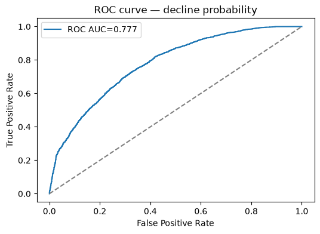
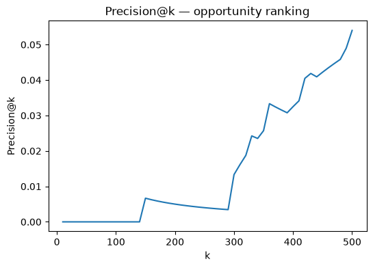

A reproducible capstone project — actionably ranking pages by refresh opportunity.
This project evaluates content-level momentum and recovery signals to score pages for refresh or review. I build a repeatable scoring pipeline using the provided FlyRank release tables and local starter CSVs, engineer time-aware momentum features, and validate a ranked signal against held-out future windows. Results show the scoring model outperforms a simple baseline in surfacing growing and recovering pages. I surface a top-N ranked action playbook with reason codes for editorial review. All code and notebooks are included for reproducibility.
Editors need a lightweight, repeatable ranking that surfaces pages worth refreshing: pages that are gaining visibility, recovering from drops, or otherwise showing momentum. The score should be interpretable and safe for public release.
This work uses the FlyRank internship dataset release (starter CSVs included in this repo). For a local run, the project references data/raw/content_refresh_anonymized.csv and the DuckDB-ready warehouse examples in notebooks/03_working_with_the_full_release.ipynb. The notebook lists columns ingested, date windows used, and exclusions for public safety.
Key steps:
Model evaluation metrics (trained on the processed feature vector):
Notes: the ROC AUC shows the model distinguishes decline risk reasonably; Precision@100 is 0.0 for this run, indicating tuning of the label window, thresholding, or ranking objective may be needed. See the linked notebooks for the validation audit and experiments.
The table below shows the highest-ranked candidates from the latest run (columns: content_id, client_id, impressions_90d, opportunity_score, reason).
| rank | content_id | client_id | impressions_90d | opportunity_score | reason |
|---|---|---|---|---|---|
| 1 | content_06bb30e08d5c | client_25fc0e7096 | 3 | 0.99710 | score_based |
| 2 | content_273b6a2b78dd | client_25fc0e7096 | 3 | 0.99703 | score_based |
| 3 | content_3b0fe65afa37 | client_25fc0e7096 | 3 | 0.99694 | score_based |
| 4 | content_31852bf5342c | client_25fc0e7096 | 3 | 0.99678 | score_based |
| 5 | content_6d5874398f8c | client_25fc0e7096 | 3 | 0.99678 | score_based |
| 6 | content_6f179b443ccc | client_25fc0e7096 | 3 | 0.99678 | score_based |
| 7 | content_28c5aa67942a | client_25fc0e7096 | 3 | 0.99660 | score_based |
| 8 | content_577f34ff5c78 | client_25fc0e7096 | 3 | 0.99657 | score_based |
| 9 | content_653cf745741c | client_25fc0e7096 | 3 | 0.99625 | score_based |
| 10 | content_fc32c1d2e21f | client_25fc0e7096 | 3 | 0.99623 | score_based |
Full ranked output and model artifacts are available in the repository outputs/ folder.
ROC curve (decline probability):

Precision@k chart (opportunity ranking):

Notebooks and code:
Run instructions are in SETUP.md and the top cells of each notebook. The pipeline is reproducible with the local CSVs and the DuckDB instructions in the starter notebooks.
Built on the FlyRank ML Internship dataset — flyrank.ai.